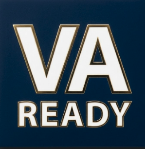
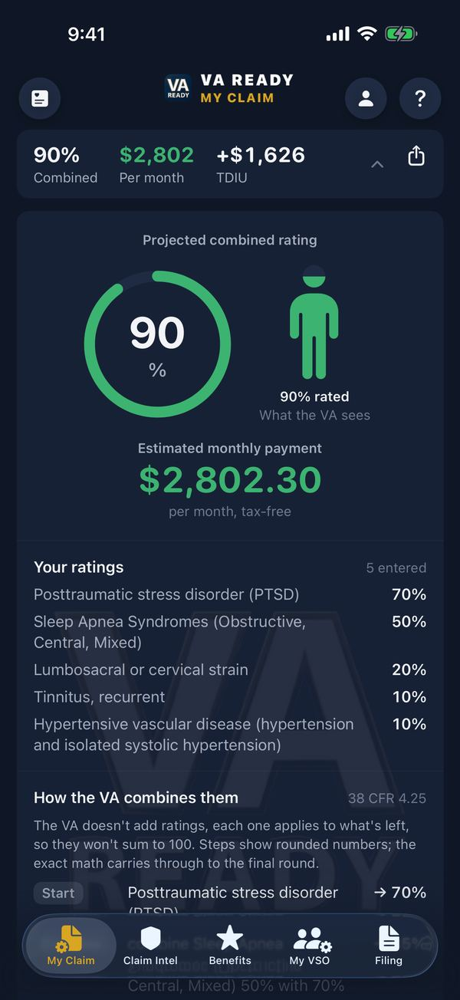
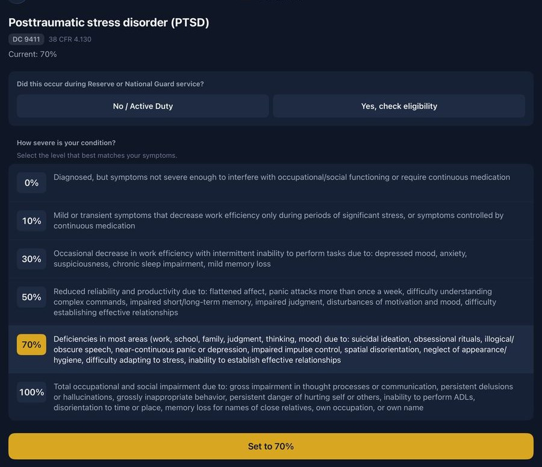
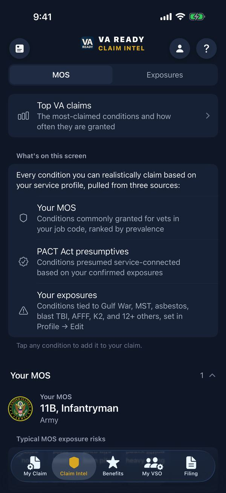
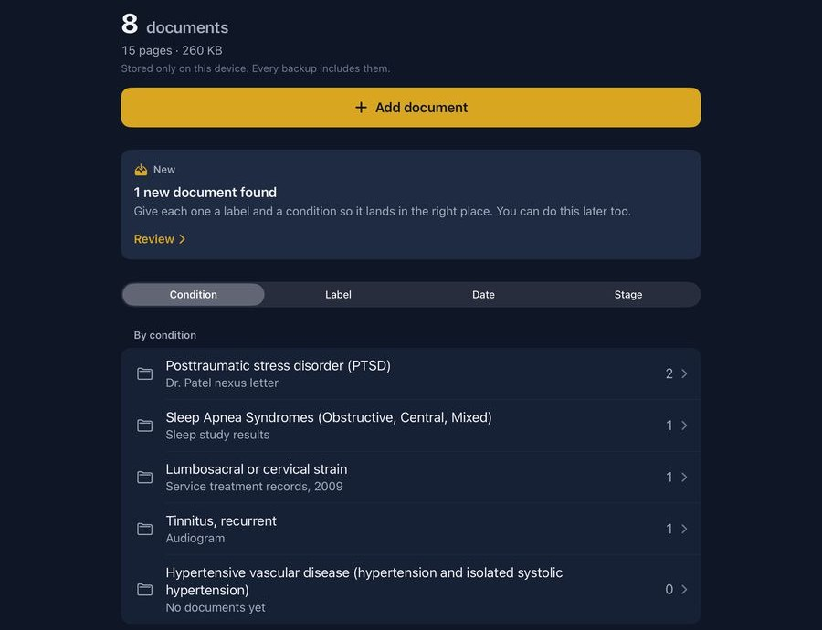

VA Ready calculates your VA disability rating and keeps your claim organized until you file.
Calculate your combined VA rating, see the 38 CFR criteria behind each condition with Pro, find the conditions and benefits that apply to you, and keep your evidence in order until you file.
No phone handy? Use the free rating calculator in your browser.
2027 VA pay rates after the 3.6% COLA: see the estimated tables.
40,000+ downloads. Your data stays on your device.

One app with two names: VA Ready on iPhone, iPad and Mac, Vet Ready on Android. It runs natively on Mac and fills the screen on iPad and Android tablets.

See the 38 CFR criteria behind each rating
With Pro, VA Ready shows the 38 CFR break points for all 765 conditions, each cross-referenced to its diagnostic code, so you can see why a condition sits at 30 and not 50, using the same criteria your rater reads.

This is an educational tool. It shows you the criteria and does the math. It does not predict what the VA will award you.
Building your claim in the app
- Add conditions from the 21 most-claimed list or search the VA’s full rating schedule.
- The bilateral factor applies on its own for paired extremity conditions under 38 CFR 4.26. Eye and ear conditions stay single, with no left and right split.
- What-If stacks a possible claim, such as a 30% secondary condition, onto your rating with the same rating engine and shows the new combined rating and payment.
- Most Special Monthly Compensation levels replace your schedular rate. SMC-K adds on top.
Ratings and reviews
out of 5 on the App Store from 600+ ratings, and 4.6 with nearly 100 reviews on Google Play
★★★★★“I entered all of my ailments, and it calculated the exact same rating that the VA certified me for. That gave me a lot of confidence in its accuracy. I also love supporting veteran-owned businesses… I highly recommend this app to any veteran who wants to better understand their VA rating or estimate their benefits.”
Kimberly Marin · Google Play · Jul 23, 2026
★★★★★Recent Updates“The ability to document your evidence, make notations, and review your conditions with periodic updates and comments solidifies this app as the best app there is for viewing, preparing, and filing VA Disability Compensation Claims. Worth way more than the cost of the lifetime subscription.”
ChubbyButFunny · App Store · Aug 21
★★★★★Most detailed“This app is it. The one that hits every function of a claim. Not only just conditions. But what I was missing out on by MOS.”
DanielJ87 · App Store · Apr 12
★★★★★“Love this app! I didn’t know that I had so many benefits in my state. Free license plate and tax exemptions!! Thank you!!”
Carmen Umbria · Google Play · Apr 29, 2026
★★★★☆“4.5 as it is. But this app is a 5/5 for potential. Even if you know all this information, it’s a great repository.”
Ryan Kielty · Google Play · Jul 28, 2026
★★★★★Life changer“This app is great. Tracks all your claims and helps you making sure you do not forget any appointments along the road. Definitely download it if you are about to separate / retire from the Military.”
TreborG89 · App Store · Apr 22
Reviews appear as veterans left them on the App Store and Google Play, four-star ones included. We did not ask for them or pay for them. The calculator gives an estimate. What the VA awards depends on your evidence and your exam.
Service history, job and exposures
Record each period you served with its dates, its component and the MOS you held during it. The VA applies different rules to Active, Reserve and Guard time under 38 CFR 3.6, so each export prints your service history as separate line items.
- Still serving
- A Service Status control works out where you are from your separation date, and you can override it either way. The Filing tab then becomes a runway with five stages: get complaints into your service treatment record, chase down missing diagnoses, pull your records while you still have base access, the BDD window from 180 to 90 days out, and a standard pre-discharge claim under 90 days.
- Reserve and Guard periods
- Annual Training can service connect a disease. A drill weekend generally covers injury only. The free duty-status check shows which rule applied to each period you served, under 38 CFR 3.6.
- Collateral duties
- Save duties such as SERE, Auxiliary Security Force, Detainee Operations, Drill Sergeant and Airborne, and they print on your claim summary, VSO packet and exposure profile.
- Claim Intel Pro
- Merges the conditions tied to your MOS, your PACT Act presumptives and your exposures into one ranked list. Add secondary and prior roles and the conditions merge across each job. Tap a condition to see why it is on your list: the source MOS, the exposures that surfaced it, and the citation. Tap to add it to your claim; the app warns you about pyramiding before it lands. It reads MOS, AFSC, rating and designator profiles across all six branches, legacy codes included, and additional-duty profiles such as Airborne, Ranger, Pararescue, Combat Controller, MARSOC, Navy SEAL, USCG MSRT and Space Force operators.
- Exposure Calculator
- Add the bases you served at, from 827 tracked DoD PFAS and EPA Superfund sites, stateside and overseas, and PACT countries, and the ships, aircraft and vehicles you worked on. The list of presumptive conditions you may be eligible for grows as you add each one, and every exposure cites VA.gov, 38 CFR, ATSDR or congress.gov. Navy nuclear ratings (MM, EM, ET) are split into submarine and surface profiles. 148 aircraft are mapped to their exposures, including the MV-22 Osprey, F-35 and KC-46, and the ground fleet covers the HMMWV, MRAP, JLTV and LAV. Toxic exposures and presumptives →

Evidence and studies by condition
A rater and a C&P examiner assess frequency and severity over time, and one exam captures one day. VA Ready labels each document and keeps it with the condition it supports.
- Evidence checklist
- Diagnosis, service records, nexus letter, buddy statements and DBQ review for each condition. Check them off as you gather them, and the claim readiness score shows your evidence completion percentage across all conditions.
- Claim Journal
- A dated, searchable record of your timeline, evidence and conditions, including the nexus letter you gathered and never sent, with a yearly reminder to review it.
- Buddy statements
- Samples show the format only, because the witness must use their own words, and list the qualities the Board of Veterans’ Appeals credited, with citations.
- C&P exam answers Pro
- The rating criteria ask how you are on an average day and a bad one. Answer the questions at your kitchen table: how it started, how often flare-ups hit and how long they last, what a good day looks like. An examiner is not required to accept papers at the exam, so submit your answers on a VA Form 21-4138 beforehand if you want them in your file.
- Symptom Tracker
- Log severity and what it stopped you doing, per condition and side. Tap any entry to view, correct or remove it; the app asks first, because your log is evidence. The 30-day grid, average, days logged and worst day show an examiner what one appointment cannot. Text export is free; PDF export is Pro.
- Claim File
- Scan paper with the camera, snap a photo, or import a PDF. Each document gets a label that matches the VA’s own document types, a date, and the condition it supports.
- Peer-reviewed studies Pro
- Open a condition in My Claim to see its studies, with the journal, year, key findings and a PubMed link. The library holds 2,403 studies from PubMed and the NIH across 395 diagnostic codes, from PTSD, tinnitus, back and knee to the cancers presumptive under PACT and Agent Orange, and newer coverage of Parkinson’s disease, ALS, multiple sclerosis, sarcoidosis, asbestosis and TBI-related dementia. Each reference matches a record in the live National Library of Medicine database. From a condition’s studies sheet, tap Share for a printable PDF to bring to your C&P exam, hand to your VSO, or attach to your claim. Your Claim Summary PDF ends with the same evidence appendix. VA ratings by condition →

Filing
Based on your separation date, the app tells you where you are in the VA process and what to do next. You still upload on VA.gov yourself, or a free accredited VSO files for you.
| Start here | Eight steps in the order most first claims go, from a free accredited VSO and an Intent to File to the C&P exam. Steps tick themselves off as you do them. |
|---|---|
| Ready for VA | One tap builds a dated folder per condition: your records, signed buddy statements and symptom logs, each file named with the document type to pick on VA.gov. You still do the upload yourself. |
| Export Center Pro | Pick who the PDF is for: your VSO, your C&P examiner, your doctor for a nexus letter, or yourself to print. The app ticks the sections that person usually needs and builds one PDF with a cover page, a contents list and numbered pages, so a rep can turn to a section instead of shuffling paper. Sending documents out is part of Pro. |
| VSO Packet Builder Pro | Your rep cannot see your notes. Build one numbered PDF with your conditions and ratings, the criteria level you selected, where your evidence stands, presumptives from your bases, ships, aircraft and vehicles, your symptom log summary, your exam answers, and your journal with gathered-but-unsent evidence flagged. The cover lists each service period with its branch and component, so your rep can apply 38 CFR 3.6. How to document your claim → |
| Filing timeline | Your BDD window, presumptive period and days since separation, an 11-step claim status tracker from “Preparing” to “Decision Made”, action checklists for your filing phase, and C&P exam preparation covering what the examiner will ask. |
| Claim Navigator | Tell the app where you are, and the Claim Navigator lists the steps from “getting ready to file” to “decision made” for a new claim, a secondary condition, a PACT Act exposure or a rating increase. Compare filing paths before you start, see the usual wait at each stage, and save or share the plan with your VSO. |
| Filing guides | 60 filing guides, including Intent to File, BDD, C&P exam prep, nexus letters, appeals and the PACT Act. Five cover the VA moving against a rating you already have: proposed reductions, protected ratings (the 5-, 10- and 20-year rules), total-disability protections, Clear and Unmistakable Error (CUE) and your due-process rights, each cited to its 38 CFR section. Pro includes the in-depth guides. The Veteran Readiness and Employment (Chapter 31) guide covers the eligibility window: if you were discharged on or after January 1, 2013, there is no time limit on your eligibility. VA claim guides → |
Benefits at each rating
Tap any rating from 0% to 100% and see the federal and state benefits that come with it. The app loads your projected rating from your claim.
| Benefits | What you see | Plan |
|---|---|---|
| Federal | 32 benefits, grouped as healthcare, education, housing, financial and dependents: VR&E, the VA home-loan funding-fee waiver, CHAMPVA, Chapter 35 and more. | Free |
| State | 644 benefits such as property tax exemptions, free plates and tuition waivers, fact-checked to official state sources, for all 50 states, DC and five territories (PR, GU, USVI, AS, CNMI). | Pro opens every state. The free tier previews Texas. |
Each benefit shows Qualified, May qualify or Not eligible, an estimated annual dollar value where one can be calculated, and how to claim it, with agency names and form numbers.
Federal veteran benefits · Veterans benefits by state · VA disability pay rates
Find a free, accredited VSO
An accredited Veterans Service Officer helps you file your claim for free. The finder searches every accredited office on the VA’s OGC accreditation list by ZIP, town, county or where you are standing, and sorts them by distance. Call or get directions in a tap.
In the app, My VSO is its own tab, with appointment reminders.
Find a VSO →VSO offices, rated by veterans
Veterans rate the office that handled their claim: 51 reviews so far across 48 accredited offices in 24 states, averaging 4.31 out of 5. Read them before you book the appointment, and report or mute any review in the app.
Read the reviews →VA Ready in the community
Veteran-founded and veteran-run. The latest places we showed up in person.
Plans and prices
Free needs no account. Pro adds the full 38 CFR rating criteria, every state’s benefits and Claim Intel.
Free
$0, no account, no card
- VA combined-rating calculator
- TDIU and P&T math at the 100% pay rate
- Auto-saving claim list
- 56 cited exposures with primary sources
- Pyramiding warnings before you add
- 8,957 VSO offices, sorted by distance
- Daily Symptom Tracker with text export
- Federal benefits at every rating tier
- Texas state benefit preview
Pro
- Pro Monthly $4.99per month Renews monthly until cancelled. Manage in App Store / Google Play.
- Pro Annual $39.99per year Saves 33%, $3.33 / month, billed annually. Renews annually until cancelled.
- Pro Lifetime $59.99once Never expires, same as 18 months of Annual. No renewals and no auto-billing. All future Pro features at no extra cost. Available on both iOS and Android. Restore on any device with the same store account.
- Full 38 CFR rating criteria on every condition
- Claim Intel: 1,098 MOS / AFSC profiles
- 89 additional-duty profiles, six branches
- All in-depth Filing Guides unlocked
- All 50 states, DC, US territories
- Symptom Tracker PDF export
- One-tap add to claim from Claim Intel
- Unlimited claim milestones
All transactions handled by Apple on iOS and Google Play on Android. Free tier requires no account. Pro purchases sync automatically across devices on the same App Store or Google Play account. Prices in USD.
Common questions
Is VA Ready affiliated with the Department of Veterans Affairs?
No. VA Ready (iOS) and Vet Ready (Android) are independent products and are not affiliated with, endorsed by, or connected to the U.S. Department of Veterans Affairs. All rating criteria come from publicly available federal regulations (38 CFR).
Is the VA disability calculator free?
Yes. The combined-rating calculator with TDIU and P&T math, your claim list, federal benefits, the accredited VSO finder, and the daily symptom log are free with no account required. Pro unlocks the full 38 CFR rating criteria, all 50 states’ benefits, and Claim Intel.
Why is the app called VA Ready on iOS but Vet Ready on Android?
It’s the same app and the same data. Google Play requires a non-government-sounding name, so the Android release is named Vet Ready while the iOS release is named VA Ready.
Does VA Ready keep my personal information private?
Yes. Your profile, claim list, and reminders stay on your device. There are no user accounts and no cloud sync of personal data. Reference content such as rating criteria and benefits is fetched read-only over an encrypted connection.
What does the Exposure Calculator do?
You add the bases you served at and the ships, aircraft and vehicles you worked on, and it cross-references your service against the PACT Act, Camp Lejeune, AFFF/PFAS, K2, Agent Orange, and other presumptive registries to surface the conditions you may be eligible to claim, each linked to a primary source.
Download the app
Free to download, with no account needed for the free tier.
Follow VA Ready
New presumptives, claim tips and VA updates on TikTok, Instagram and Facebook.
VA Ready (iOS) and Vet Ready (Android) are not affiliated with, endorsed by, or connected to the U.S. Department of Veterans Affairs or any government agency. This app does not provide legal or medical advice. All information is based on publicly available VA regulations (38 CFR) and documented best practices. Ratings and benefit estimates are for informational purposes only. Always consult a qualified healthcare provider for medical decisions and a VA-accredited attorney or claims agent for legal counsel.